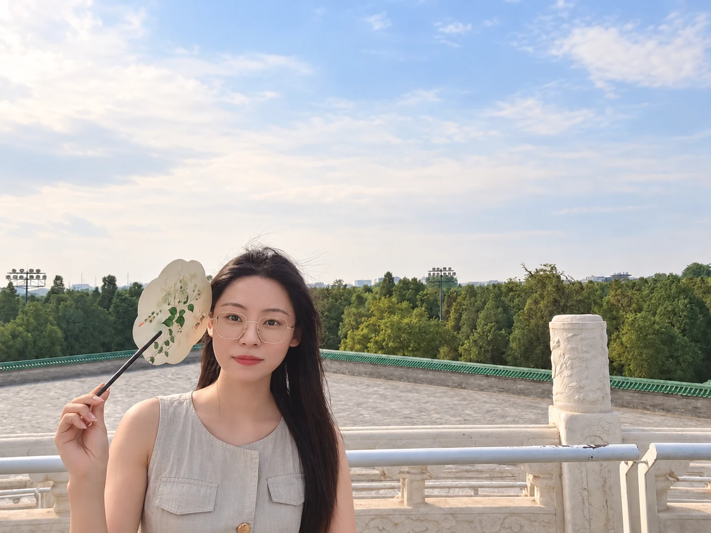
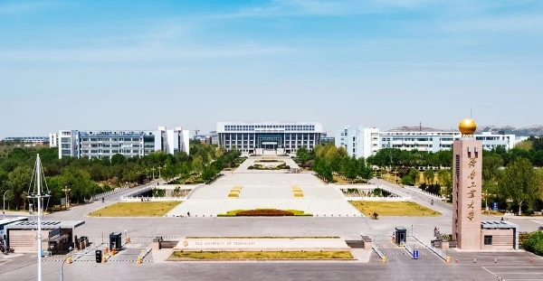
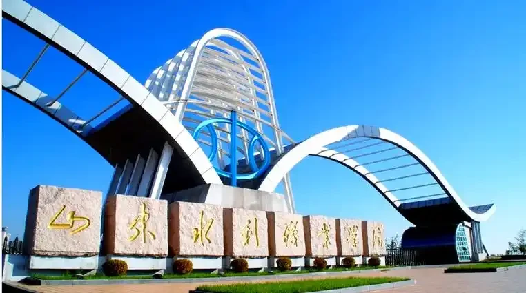

2024.09 — 2027.07
硕士在读河北北方学院
农业工程与信息技术
HELLO / 你好
认真做事，也用心表达。
从项目支持到 B2B 市场运营，从持续学习到独立创作。我喜欢把信息梳理清楚，把想法落实到行动。
山东 · 济南 ／ 持续学习与探索

02 / EDUCATION
从云计算到信息管理，再到农业工程与信息技术。
2024.09 — 2027.07
硕士在读农业工程与信息技术

2022.03 — 2024.07
本科信息管理与信息系统

2018.09 — 2021.07
专科云计算技术与应用
获AI济南超级联赛第二季（第九届中国模式识别与计算机视觉大会(PRCV2026)官方竞赛）决赛银奖，奖金2k
获2026金砖国家职业技能大赛-人工智能技术应用赛项国赛三等奖，中国赛区北区二等奖
获“光影流筋・文脉赓续”中华传统文化短视频大赛二等奖
在教育部高校城乡规划帮扶联盟乡村振兴与可持续发展学术研讨会上获二等奖
获第十二届山东省大学生科技节 ——“赛冠杯” 第七届山东省大学生电子与信息技术应用大赛三等奖
获第三届山东新动能软件创新创业大赛优秀奖
获 CETC55 第三届校园技能大赛暨第一届云平台运维与开发校园技能大赛三等奖
获第十一届山东省大学生科技节 —— 第四届山东省创客大赛三等奖，两项
获全国移动互联大赛山东赛区高校组三等奖
组织政治学习、主题团日活动，参与双创比赛策划、活动流程安排与新生宣传，积累组织协调与内容表达经验。
03 / EXPERIENCE
项目支持、市场运营与直播实践，在真实工作里积累经验。
2026.07 — 2026.09
把科研成果与农产品介绍给更多人。
京农优品是北京农林科学院旗下的品牌。
负责北京农科院科研成果转化产品、各农科院优质产品及助农项目农产品的直播推广与销售，单场直播时长 4 小时。
在无任何专业培训的情况下，通过旁听 2 场直播自主学习产品知识与直播技巧，后独立承担直播产品讲解、观众互动。
2021.07 — 2024.06
百度搜索推广广告投放、创意制作与效果优化，实现客户量提升；结合行业趋势及客户需求，制定典型和专项解决方案。
维护白皮书与方案，从零搭建、梳理公司知识库，推动资料体系化、规范化管理与信息共享。
负责企业知识产权申请与维护，主导参与 17 项软著、2 项证书、2 项产品认证。
2020.07 — 2021.07
沟通需求，制定、讲解与演示非结构化数据管理、ISO 体系文件管理、企业知识管理及档案管理解决方案。
参与投标文件编写、方案设计、资料准备及产品演示，作为核心成员参与完成 22 个项目投标。
使用 Photoshop 等工具绘制设计图并构建原型，结合用户需求与团队讨论优化界面与操作逻辑。
PROJECT PRACTICE
撰写白皮书与解决方案；安装系统；制定并执行测试用例、编写测试报告；提供用户培训与使用支持，提出优化建议。
负责项目 PPT、宣传易拉宝设计、文案撰写，以及部分团队协作与沟通工作。
参与图像数据集处理、机器视觉模型测试。
04 / RESEARCH
把学习与研究，沉淀成能够交流、
讨论与继续推进的成果。
PUBLICATIONS
RESEARCH PROJECTS
参与科研项目
参与科研项目
参与科研项目
INTELLECTUAL PROPERTY
ACADEMIC EXCHANGE
多次参与国家级、省级学术会议并作报告，在教育部高校城乡规划帮扶联盟乡村振兴与可持续发展学术研讨会上获二等奖。
05 / SKILLS & LIFE
2026 年 11 月，获AI济南超级联赛第二季（第九届中国模式识别与计算机视觉大会(PRCV2026)官方竞赛）决赛银奖，奖金2k。
2026 年 05 月，获“光影流筋·文脉赓续”中华传统文化短视频大赛二等奖。
MY TOOLKIT
方案与白皮书撰写、产品演示、宣传文案、用户培训。
Photoshop、Xmind、Office，擅长使用 AI 工具。
Stata、SPSS、Linux、Python、C、MySQL；具备计算机与信息技术学习背景。
HarmonyOS 应用开发者基础认证、计算机二级、普通话证书、机动车驾驶证。
BEYOND WORK
保持好奇，也给生活留一点空间。
FROM MY KITCHEN
把认真留给工作，也把好胃口留给生活。
从想法到成片，独立完成自己的课外视频作品。
乐于接受新事物和挑战，持续学习、掌握新技能。
烹饪、游泳，更多兴趣等你一起交流~
A LITTLE INTERACTION
移动鼠标或轻触，与小球互动；点击小球，收获一点好运。
好运小球